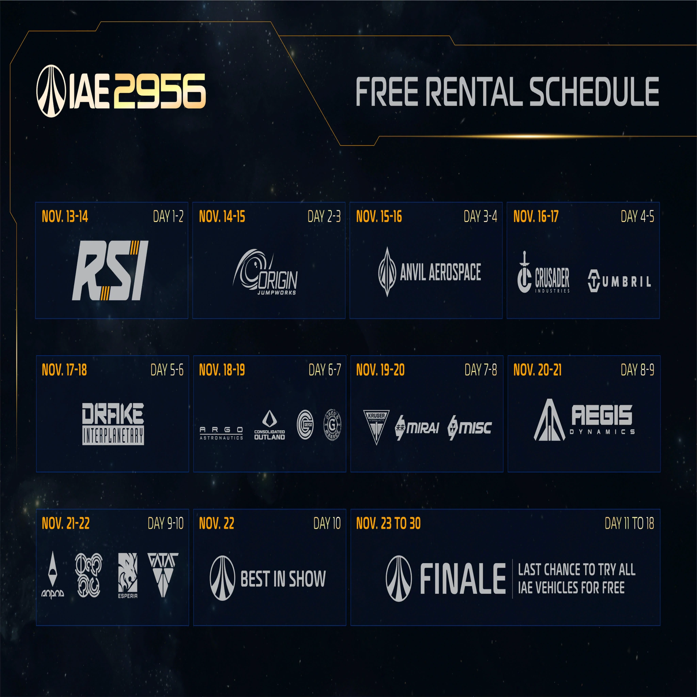
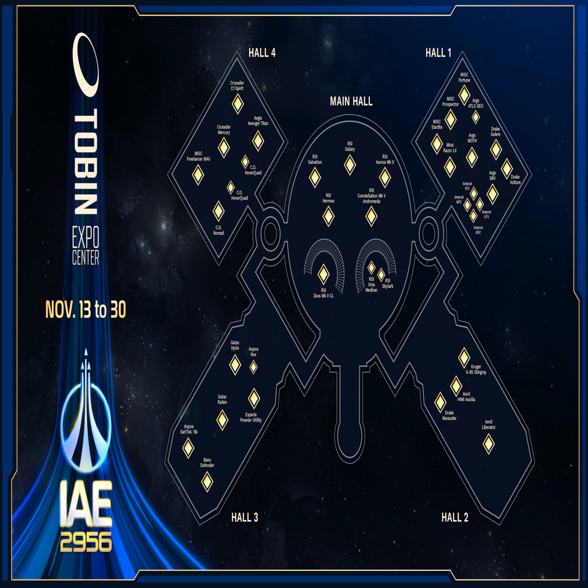
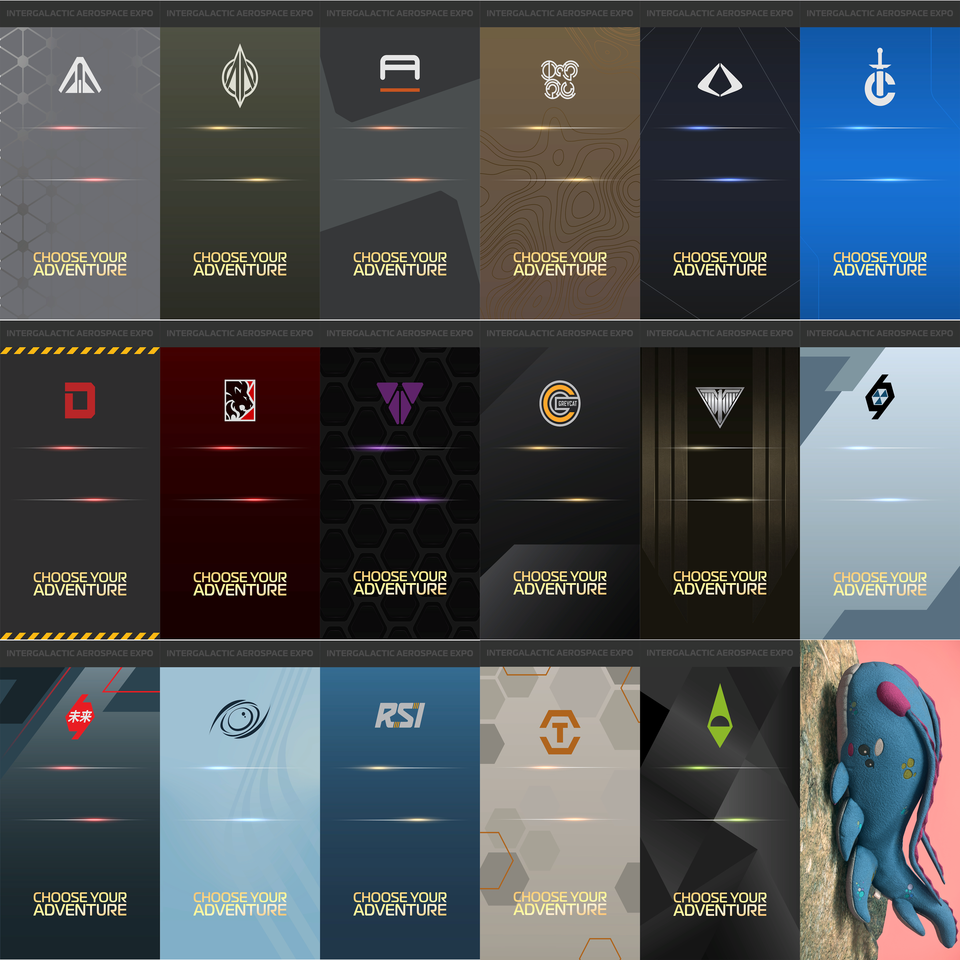

LIVE…
—Version officielle en coursASTERIAX VERSE
Le Verse prend des airs hantés… explore la flotte avant que le brouillard ne l’engloutisse.
Le Verse, plus clair.
Directement dans ton navigateur.
Retrouve tous les vaisseaux Star Citizen, leur statut, leurs caractéristiques et leur disponibilité en jeu.
Dernier patch / publicationConnexion au flux officiel RSI…
RSI LauncherVérification de la version…Voir le RSI Launcher ↗
Base de donnéesChargement…
DERNIÈRES PUBLICATIONS
Actualités Star Citizen
Les dernières publications officielles RSI, directement sur la page d’accueil.
Chargement des dernières actualités…
NOUVEAUTÉS DU CATALOGUE
Dernières sorties
🎃 HALLOWEENLe dernier lot de vaisseaux et véhicules sorti dans Star Citizen, détecté depuis les publications officielles.
Recherche des dernières sorties…
MON ESPACE
Mon hangar
Résumé uniquement, sans aperçu des cartes de vaisseaux.
0Mes vaisseaux
0Liste d’envie
EN CE MOMENT
À suivre dans le Verse
Patchs, roadmap et publications officielles récentes regroupés en un coup d’œil.
Chargement des informations officielles…
CATALOGUE COMPLET
Vaisseaux & véhicules
Vérification du catalogue…
Chargement du catalogue des vaisseaux
CATALOGUE
Équipements
MON ESPACE
Mon hangar
Classe tes vaisseaux réellement possédés séparément de ceux que tu souhaites obtenir, y compris les concepts.
ACTUALITÉS OFFICIELLES
News Star Citizen
Dernières publications de Roberts Space IndustriesChargement du flux officiel…
ÉVÉNEMENT À VENIR
IAE 2956
Intergalactic Aerospace Expo · l'exposition des vaisseaux du Verse.
Programme prévisionnel · à confirmerOuverture prévue le 13 novembre à 17 h 00Heure de Paris · 16 h 00 UTC · à confirmer pour 2956
Retrouve les journées constructeurs et le plan de l'exposition. Ces informations pourront évoluer jusqu'à l'annonce officielle.
Voir les annonces officielles RSI ↗À SUIVRE
Programme de l'IAE
Ouverture prévue dansCalcul en cours…
Calendrier prévisionnel · à confirmer par RSI
VOTRE FLOTTE
Préparer sa visite
Explore les vaisseaux et garde tes favoris dans ton hangar avant l'événement.
PRÉPARER SA VISITE
Horaires et plan d'étage
Programme prévisionnel : dates, exposants et disponibilités peuvent changer. Vérifie les annonces officielles avant de planifier ta visite.




Journées indiquées sur le visuel
RSI
Origin
Anvil
Crusader · Tumbril
Drake
Argo · Consolidated Outland · Greycat
Kruger · Mirai · MISC
Aegis
Aopoa · Banu · Esperia · Gatac
Best in Show
Finale
Vaisseaux et véhicules notables mentionnés
- RSI Galaxy
- RSI Constellation Mk V Andromeda
- RSI SkylarkDisponible avec le Centaurus ↗
- Drake Marauder
- Anvil Liberator
- Gatac Hyūn
APERÇU DES CONSTRUCTEURS
Les marques du salon
Un aperçu visuel des constructeurs présents sur le programme prévisionnel. Composition susceptible d'évoluer.


Ouvrir le visuel en grand ↗PUBLICATIONS OFFICIELLES